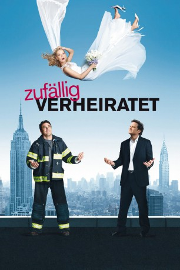

#6015 Zufällig verheiratet
Alternativ: The Accidental Husband
 
 IMDB-Wertung: 5.6 / 10
IMDB-Wertung: 5.6 / 10  Metascore: 0
Metascore: 0 
Was tun, wenn die Hochzeit mit dem Liebsten kurz bevor steht und man auf dem Papier bereits verheiratet ist - mit einem anderen? Emma Lloyd hat es geschafft: Dank ihres sensiblen und verantwortungsvollen Gespürs für Beziehungen moderiert sie eine erfolgreiche Radio-Talkshow, hat einen viel versprechenden Autorenvertrag an Land gezogen und führt eine glückliche Beziehung mit ihrem Verlobten Richard. Mit seiner konservativen Art verkörpert er alles, was Emma sich von ihrem Partner wünscht. Als Richard ihr einen Antrag macht, scheint ihr Glück perfekt. Doch dann findet Emma heraus, dass sie bereits verheiratet ist...mit einem Mann, den sie weder persönlich kennt, noch hat sie dessen Namen jemals gehört. Emma setzt alles daran, Mister Unbekannt aufzuspüren, um die Ehe umgehend zu annullieren!
Jahr: 2008
Dauer: 90 Minuten
FSK: 0
Land: USA Studio: Sony Pictures Home EntertainmentTonspuren:
Untertitel:
Auflösung: 1080p (1920x1040) Größe: 6225 MB
Genre: Komödie, Liebe
Regisseur:  Griffin Dunne
Griffin Dunne
Drehbuch: David W. Rintels
Soundtrack:
Darsteller:
 Uma Thurman als Emma
Uma Thurman als Emma Jeffrey Dean Morgan als Patrick
Jeffrey Dean Morgan als Patrick Colin Firth als Richard
Colin Firth als Richard Sam Shepard als Wilder
Sam Shepard als Wilder- Lindsay Sloane als Marcy
 Justina Machado als Sofia
Justina Machado als Sofia Ajay Naidu als Deep
Ajay Naidu als Deep- Jeffrey Tedmori als Ajay
- Nick Sandow als Larry
 Michael Mosley als Declan
Michael Mosley als Declan Brooke Adams als Carolyn
Brooke Adams als Carolyn- Lindsey Kraft als Lauren
 Sarita Choudhury als Sunny
Sarita Choudhury als Sunny Isabella Rossellini als Mrs. Bollenbecker
Isabella Rossellini als Mrs. Bollenbecker Keir Dullea als Mr. Bollenbecker
Keir Dullea als Mr. Bollenbecker- Adesola A. Osakalumi als Didier
- Santo Fazio als Security Guard #1
 John Rothman als Business Man
John Rothman als Business Man- Beth Dzuricky als Gay Partners
- Devika Bhise als Chandini
- Gary Cowling als Clerk
 Ilana Levine als Autograph Seeker
Ilana Levine als Autograph Seeker Welker White als Cake Consultant
Welker White als Cake Consultant Kristina Klebe als Katerina
Kristina Klebe als Katerina- April Yvette Thompson als Business Woman
 Octavio Gómez Berríos als Latino Delivery Guy
Octavio Gómez Berríos als Latino Delivery Guy- Ben Hauck als Proby
- Nicole Burdette als Woman Caller
- Kelly Ebsary als Fan
 James Thomas Bligh als Head Waiter , uncredited
James Thomas Bligh als Head Waiter , uncredited- Jeremiah Caleb als Wedding Guest , uncredited
- Jay Charan als Indian , uncredited
- Kathryne Isabelle Easton als Sushi Waitress , uncredited
- Zeke Hawkins als Katerina's Fiance , uncredited
- Matthew Kehoe als Guy on Vespa , uncredited
- Jason Evans Lee als Wedding Guest , uncredited
- Michael McDerman als Cake Consultant , uncredited
- Shaun Nac als Dancer , uncredited
- Rob Pedini als Soccer Player , uncredited
- Sejal Shah als Indian , uncredited
- Kelly-Ann Tursi als Girl at Book Signing , uncredited
 Uzimann als Wedding Guest , uncredited
Uzimann als Wedding Guest , uncredited- Raj Vasudeva als Deep's Guest , uncredited
- Yolande Bavan als Naniji
- Hudson Cooper als Security Guard #2
- Elisabeth A. Furtado als Gay Partners
- Tony Rigo als Bartender
- Thomas Mintz als Engineer
- Thom Prin Jr. als FDNY Guy
- David Scott Klein als Book Party Guest
Datei: X:\2008(N-Z)\Zufällig verheiratet (2008, FSK0, 1920x1040).mkv seit 20.04.2017
Festplatte: HD 2008(G-Z)-2009(A-F)
 Es gibt insgesamt 91 Filme in der Gruppe '2008(N-Z)'
Es gibt insgesamt 91 Filme in der Gruppe '2008(N-Z)'